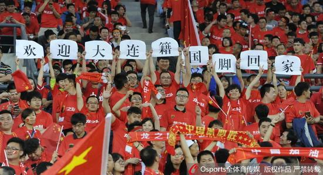

19年，当国足重回大连
新华社大连６月７日体育专电(记者韦骅 蔡拥军)进入６月，大连夜晚的气温还是有些低，但７日在大连体育中心，球迷们热情的呼喊驱散了球场内的阵阵凉意。虽然中国队最终０：１负于哈萨克斯坦队，但整场比赛没有嘘声。
为了这一刻，大连球迷已经等待太久。
作为中国著名的“足球城”，大连上一次承办中国男足的比赛还要追溯到１９９７年的世界杯亚洲区预选赛十强赛。１９年前，大连金州体育场承办了国足的四个主场比赛，但却亲历了中国队第六次倒在冲击世界杯的路上。尤其是首战主场对阵伊朗队，那是许多足球人不愿提及的回忆。在那场比赛中，中国队在两球领先的情况下，短时间内崩盘，最终２：４不敌对手。尽管这场比赛并不是决定性的，但却成为中国队长久的痛⋯⋯
那一年，大连孩子冯潇霆才１２岁，但现在，他已经成为了中国队的队长，即将与他的队友——包括数名大连籍球员，继续征战世界杯预选赛的十二强赛。在７日的比赛中，中国队的６名大连籍球员冯潇霆、王大雷、杨旭、赵明剑、李学鹏、于汉超先后登场。而中国队主教练高洪波也在６日表示，能到大连来比赛非常骄傲。
１９９７年之后，大连再没有中国队比赛的足迹，直到这一次。令人更遗憾的是，虽然目前的中国队阵中有６名大连籍球员，虽然中超球队中大多有大连人的身影，但是中超联赛中已经不见了大连球队的踪迹。中甲的两支大连球队，新军大连超越队的任务是保级，大连一方队则志在冲超，但目前的排名、积分并不乐观。
为了迎接中国队再来大连，大连市做了相当多的工作。大连市体育局副局长单吉仁说，为了这次热身赛和１２强赛的主场申办，大连市对球场内的草皮、灯光、音响等设施进行了大量改造。球迷们也倾尽所能，球迷大川说，不少球迷协会为球迷准备了大巴，还发放统一的红色纪念衫，“这在大连非常少见，在我印象中，上一次有球迷团体发服装还是在大连实德队的最后一场比赛中，希望大连能有机会举办１２强赛”。
比赛开始前，一面巨大的国旗出现在看台上；比赛进行过程中，“祖国”的口号响彻全场；比赛结束了，结果并不让人满意，中国队主教练高洪波都在赛后新闻发布会上表示非常沮丧，但赛场并未出现嘘声四起的情况，球迷们有秩序地退场。虽然中国队输了比赛，但“足球城”的球迷理应赢得尊敬。